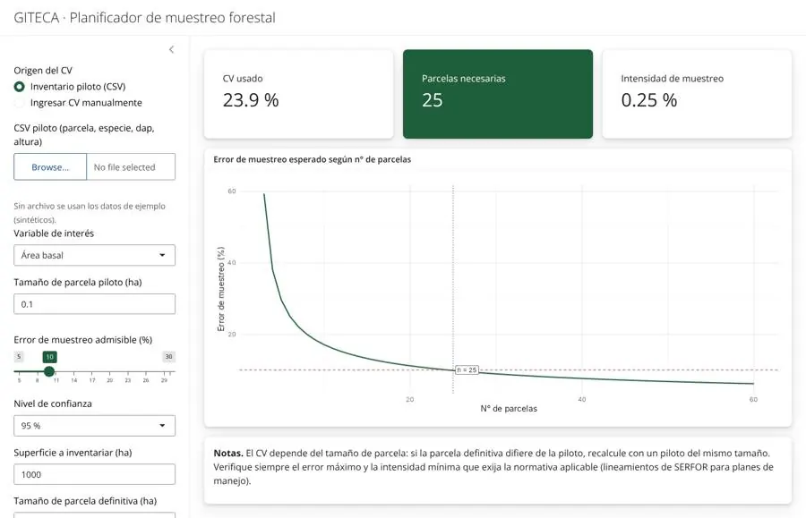
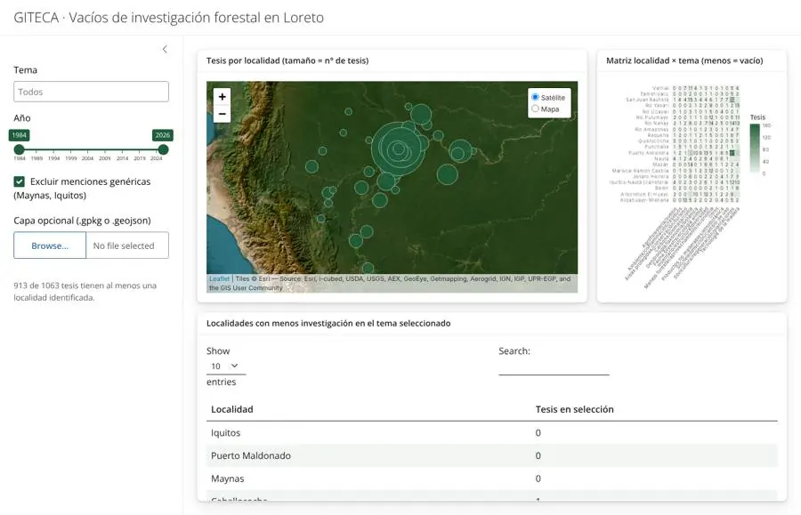
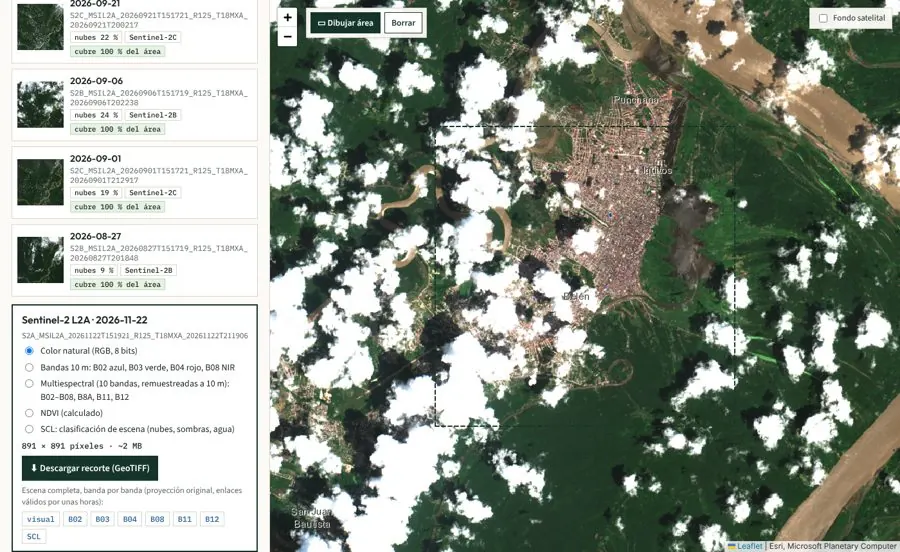

Herramientas para investigar y gestionar el bosque
Aplicaciones de inventario, muestreo, coeficientes de madera y monitoreo satelital. Las de investigación se construyen sobre las 1 063 tesis de la Facultad de Ciencias Forestales de la UNAP (1984–2026). Código disponible para consulta; todos los derechos reservados.
 Disponible
DisponibleExplorador de tesis FCF-UNAP
Buscador con filtros por escuela, tema, año y asesor; tendencias, términos frecuentes y red asesor–tesista.
Abrir app Disponible
DisponibleCalculadora de inventarios
N/ha, área basal, volumen, IVI, Shannon y Simpson, curva de acumulación y biomasa aérea a partir de un CSV.
Abrir app
DisponiblePlanificador de muestreo
Número de parcelas necesario y error esperado según el coeficiente de variación de un inventario piloto.
Abrir app
DisponibleVacíos de investigación
Mapa de tesis por localidad y matriz localidad × tema para ubicar dónde falta estudiar.
Abrir app
DisponibleDescarga gratis de imágenes Sentinel-2, Landsat y DEM
Nuevo · dibuja tu área, elige la imagen y descarga el GeoTIFF recortado: Sentinel-2 (10 m), Landsat 4–9 (30 m, desde 1982), NDVI y modelos de elevación Copernicus, NASADEM y ALOS. Sin registro; incluye scripts en R y Python para descarga masiva.
Abrir descargas Disponible
DisponibleObservatorio de amenazas de la Amazonía peruana
Nuevo · actualización diaria con datos abiertos: creciente y vaciante de 10 ríos amazónicos frente a lo normal (inundación y sequía), focos de calor, peligro meteorológico de incendio y pérdida de bosque.
Abrir observatorio Disponible
DisponibleBiblioteca de coeficientes de madera
Densidad básica, contracciones, relación T/R, MOE y MOR de 43 especies amazónicas, extraídos de 23 tesis FCF-UNAP, con enlace a cada fuente.
Abrir app Disponible
DisponibleDiseño y planificación de inventarios forestales (PGMF)
Para titulares de títulos habilitantes y regentes: con un solo shapefile de tipos de bosque calcula superficies y el diseño de inventario (número, dimensiones, intensidad y distancia de parcelas), distribuye parcelas Este–Oeste por estrato y exporta parcelas y centroides en SHP, KML, Excel y GeoJSON. Incluye capa de prueba. Autor: Ing. Manuel Galán Gonzales, equipo GITECA. Referencia: RDE N.° 046-2016-SERFOR-DE.
Abrir appPruébalas ahora, sin instalar nada
Elige un sitio de tesis o dibuja tu área de trabajo y obtén resultados en el navegador.
| App | Datos | Resultado | |
|---|---|---|---|
| RÍO VIVO · Amazonía peruana | Landsat, Sentinel-2, JRC, GHSL, Dynamic World, Hansen | Erosión y sedimentación de cauces, retroceso de orillas y riesgo de desbarrancamiento, playas en aguas bajas y ocupación a lo largo de carreteras (1985–hoy) | Abrir app |
| Visor de tesis y cobertura | Sitios de tesis + Hansen GFC | Bosque 2000 y pérdida anual alrededor de sitios de tesis FCF-UNAP | Abrir app |
| Monitor de biomasa GEDI | GEDI L4B | Biomasa aérea, error estándar y carbono del área de trabajo | Abrir app |
| Fenología de aguajales | MODIS EVI, Sentinel-2 | Series de tiempo y perfil mensual de aguajales y otros bosques | Abrir app |
| Alertas de deforestación | Alertas RADD | Hectáreas alertadas por año y prioridad de atención | Abrir app |
| Hidroperíodo | JRC GSW, Sentinel-1 | Meses de inundación bajo el dosel en várzea e igapó | Abrir app |